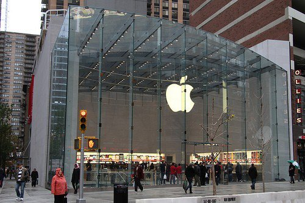
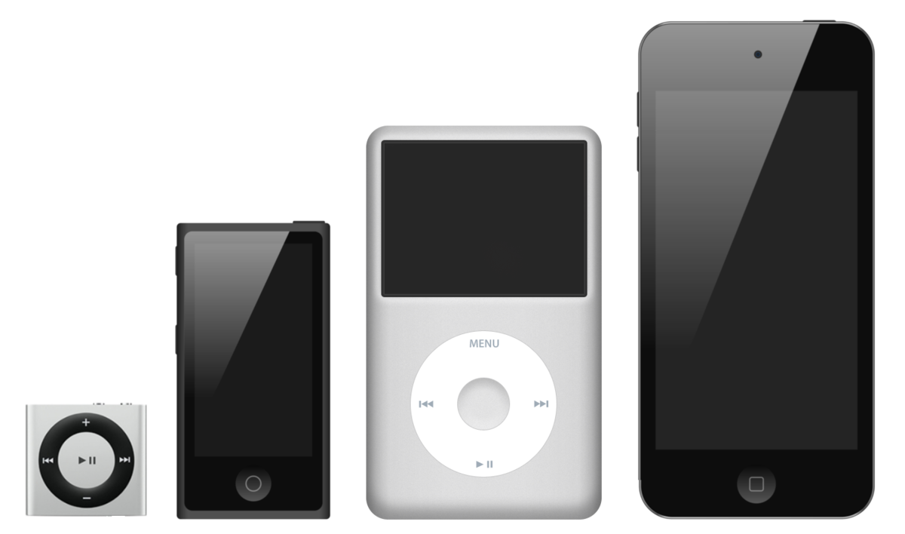
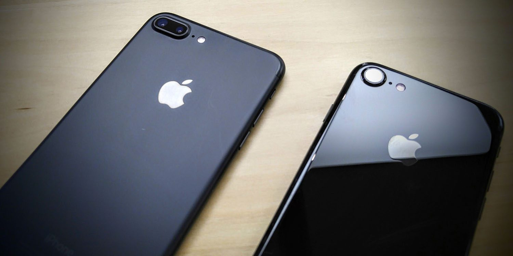
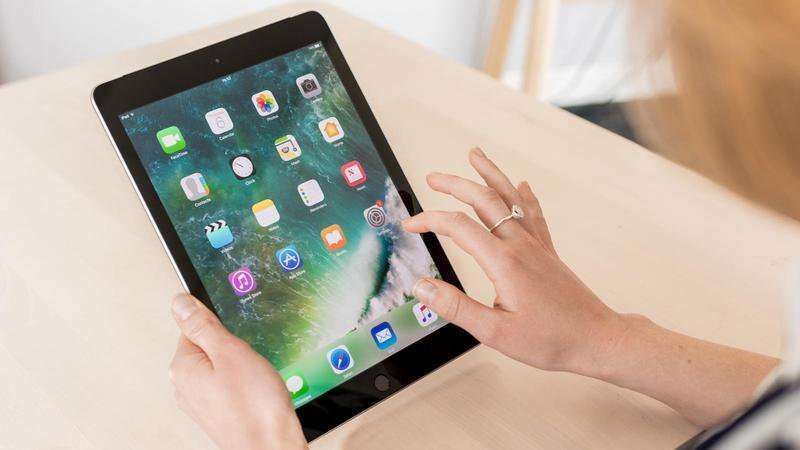

Apple
Apple Inc. es una empresa estadounidense que diseña y produce equipos electrónicos, software y servicios en línea. Tiene su sede central en el Apple Park, en Cupertino (California, Estados Unidos) y la sede europea en la ciudad de Cork (Irlanda). Sus productos de hardware incluyen el teléfono inteligente iPhone, la tableta iPad, el ordenador personal Mac, el reproductor de medios portátil iPod, el reloj inteligente Apple Watch y el reproductor de medios digitales Apple TV. Entre el software de Apple se encuentran los sistemas operativos iOS, macOS, watchOS y tvOS, el explorador de contenido multimedia iTunes, la suite iWork (software de productividad), Final Cut Pro X (una suite de edición de vídeo profesional), Logic Pro (software para edición de audio en pistas de audio), Xsan (software para el intercambio de datos entre servidores) y el navegador web Safari.
La empresa operaba, en mayo de 2014, más de 408 tiendas propias en nueve países, miles de distribuidores (destacándose los distribuidores premium o Apple Premium Resellers) y una tienda en línea (disponible en varios países) donde se venden sus productos y se presta asistencia técnica. De acuerdo con la revista Fortune, Apple fue la empresa más admirada en el mundo entre 2008 y 2012. En 2015, se convirtió en la empresa más valiosa del mundo según el índice BrandZ al alcanzar los 247 000 millones de euros de valor. El 8 de noviembre de 2017, según The Wall Street Journal, la compañía se convirtió en la primera empresa en lograr una capitalización de mercado de 900 mil millones de dólares.

Fundación
Steve Jobs y Steve Wozniak se conocieron en 1971, cuando un amigo mutuo, Bill Fernández, presentó a Wozniak, quien tenía 21 años de edad, a Jobs, entonces de 15 años. Steve Wozniak, a quien le gustaba que le llamaran Woz, siempre había sentido una gran atracción por la electrónica en general, diseñando desde que era pequeño circuitos en papel para después tratar de optimizarlos al máximo. Dada su afición por la electrónica, Woz "apadrinaba" a otros chicos a los que les gustase el tema, como Bill Fernández o el mismo Steve Jobs.
Pronto Wozniak empezó a dedicar cada vez más y más tiempo a construir en papel su propia computadora. Tras intentos relativamente infructuosos, finalmente sus esfuerzos dieron como resultado lo que sería la Apple I. Tras la presentación de su computadora en el club informático Homebrew Computer Club y asombrar a sus participantes, Jobs rápidamente vio la oportunidad de negocio, por lo que empezó a promover la computadora entre otros aficionados de la informática del Homebrew Computer Club y otras tiendas de electrónica digital.
Al poco tiempo empezaron a recibir pequeños encargos de computadoras que construían ellos mismos con máquinas hechas a mano, llegando a vender unos 200 ejemplares de su máquina Apple I. Se les unieron más amigos, pero las prestaciones del Apple I eran limitadas, así que empezaron a buscar financiación. Finalmente, Jobs conoció a Mike Markkula, que accedió a invertir 250 000 USD, creándose así el 1 de abril de 1976, Apple Computer, a través de un contrato firmado, el mismo, se subastó el 13 de diciembre de 2011 en Nueva York, que tuvo como base un valor inicial de entre 100 y 150 mil dólares, que alcanzó un valor de 1,59 millones de dólares.
En total, se produjeron y se vendieron alrededor de doscientas unidades a 666.66 USD la unidad, pero el éxito fue tal que no pudieron dar abasto a tanta demanda. Las características del Apple I eran limitadas por el poco dinero del que disponían Jobs y Wozniak. De hecho, para construir el prototipo, Jobs tuvo que vender su camioneta y Woz su calculadora programable HP.

Dispositivos
iPod
El 23 de octubre de 2001, Apple presentó el iPod, un reproductor de audio digital. Este dispositivo ha evolucionado para incluir a diversos modelos orientados a satisfacer las necesidades de los diferentes usuarios. El iPod es el líder del mercado en reproductores de música portátiles por un margen significativo, con más de 100 millones de unidades enviadas a partir del 9 de abril de 2007. Apple se ha asociado con Nike para presentar el deportivo Nike iPod Kit que permite sincronizar los corredores a vigilar y sus carreras con iTunes y el sitio web de Nike. Apple vende actualmente cuatro variantes del iPod con un soporte descargable en su sitio web22 llamado iTunes, con el que se dan servicios de actualizaciones y gestión de música, y que permite la compra y descarga de esta música en versiones originales y completamente legales en algunos países seleccionados:

iPhone
En la Conferencia & Expo en enero de 2007, Steve Jobs presentó el anticipado iPhone, una convergencia de Internet habilitado para el iPod y los teléfonos inteligentes. El iPhone combina un 2,5 G de banda cuádruple GSM y EDGE teléfono celular con características se encuentran en dispositivos de mano, ejecutando una reducción de las versiones de Apple Mac OS X, con diversas aplicaciones de Mac OS X como Safari y Mail. También incluye basado en la web y Dashboard aplicaciones, tales como Google Maps y el tiempo. Esta versión permitió que el iPhone pudiera correr en la red 3G y agregó navegación GPS, entre otras cosas. El iPhone 4 es la nueva generación de iPhone, evolución del 3GS, entre sus características cabe destacar su procesador A4, su pantalla Retina Display Multi-Touch de 3.5 pulgadas con una resolución de 960x640 píxeles a 326 p/p, la incorporación de una cámara de 5 megapíxeles más un LED Flash, la capacidad de grabar vídeos en alta definición a 720p, otra cámara adicional para realizar videoconferencias con la aplicación FaceTime, la incorporación de un giroscopio de 3 ejes y el ser el primer iPhone en traer de serie el sistema operativo iOS 4. Además es el teléfono inteligente más delgado del mundo con solo 9.3 mm de ancho. Actualmente, Apple tiene a la venta el iPhone 4S, el cual tiene pocas novedades respecto al iPhone 4, sus diferencias más notables son el aumento de la velocidad del procesador y la inclusión de Siri, un software de asistente personal, capaz de abrir aplicaciones, responder preguntas e incluso dar recomendaciones.

iPad
El iPad es una nueva clase de dispositivo desarrollado por Apple Inc. Anunciado el 27 de enero de 2010, se sitúa en una categoría entre un teléfono inteligente y una notebook. Las funciones son similares al resto de dispositivos portátiles de Apple Inc. como es el caso del iPhone o iPod touch aunque la pantalla es más grande y con respecto al hardware es más potente, funciona sobre una versión adaptada del sistema operativo de iPhone (iOS), con una interfaz de usuario rediseñada para aprovechar el tamaño mayor del dispositivo y la capacidad de utilizar el servicio iBookstore de Apple con la aplicación iBooks (software para lectura de libros electrónicos). Posee una pantalla con retroiluminación LED, capacidades multitáctiles de 9,7 pulgadas (24,638 cm), de 16 a 64 gigabytes (GB) de espacio tipo memoria flash, Bluetooth, y un conector dock de 30 pines que permite la sincronización con el software iTunes y sirve de conexión para diversos accesorios. Existen dos modelos: uno con conectividad a redes inalámbricas Wi-Fi 802.11n y otro con capacidades adicionales para redes 3G (puede conectarse a redes de telefonía celular HSDPA) y GPS Asistido. Ambos modelos pueden ser adquiridos en tres capacidades de almacenamiento distintas.

Indentidad
Logo
Desde la introducción del Macintosh en 1984, Apple ha sido reconocida por sus esfuerzos hacia una efectiva publicidad y la comercialización de sus productos, a pesar de que ha sido criticada por las reclamaciones de algunas campañas más recientes, en particular, la de Power Mac 2005.
El primer logotipo de Apple, diseñado por Jobs y Wayne, representa a sir Isaac Newton sentado bajo un árbol de manzanas. Sin embargo, el primer diseño no resultó del agrado de bastante gente en Apple, por lo que se encargó un rediseño a Rob Janoff, el cual presentó una variedad de logos monocromáticos basados en la misma manzana. El concepto gustó, pero Jobs insistió en que el logo incluyera los colores del arco iris para resaltar la humanización de la empresa y la calidad de imagen del Mac.
Si bien generalmente se acepta que el logotipo es una referencia a Isaac Newton, una curiosa leyenda urbana asegura que el mordisco de la manzana rinde homenaje al matemático Alan Turing, quien se suicidó comiendo una manzana envenenada con cianuro. Según la leyenda urbana, el arco iris de colores sería una referencia a la bandera arco iris, como un homenaje a la homosexualidad de Turing. Sin embargo, estas suposiciones no han sido confirmadas, y de hecho, los colores del logo ni siquiera se muestran en el mismo orden que en la bandera arco iris, dado que esta fue diseñada dos años más tarde del nacimiento del logo de Apple. Otras teorías acerca de la motivación de la manzana, como la manzana del conocimiento o la referencia del mordisco al byte informático (en inglés, mordisco se escribe bite), también han sido desmentidas por Janoff, el diseñador original.
En 1998, con la implantación de los nuevos iMac, Apple empezó a usar un logotipo monocromático debido a la insistencia de Jobs, el cual acababa de regresar a la empresa, en forma idéntica a su anterior encarnación arco iris. El logotipo es uno de los más reconocidos símbolos de marca en el mundo, identifica todos los productos de Apple y tiendas de venta al público (el nombre de "Apple" en general casi nunca estuvo presente) y se ha incluido como autoadhesivos en casi todos los Macintosh y productos Apple. En 2001, se sustituyó el diseño monocromático por uno que reflejase el tema Aqua característico de macOS. En 2003, el logo volvió a sufrir una nueva modificación, adquiriendo un efecto cromado para publicitar Mac OS X Panther y el resto de gama de productos de Apple.